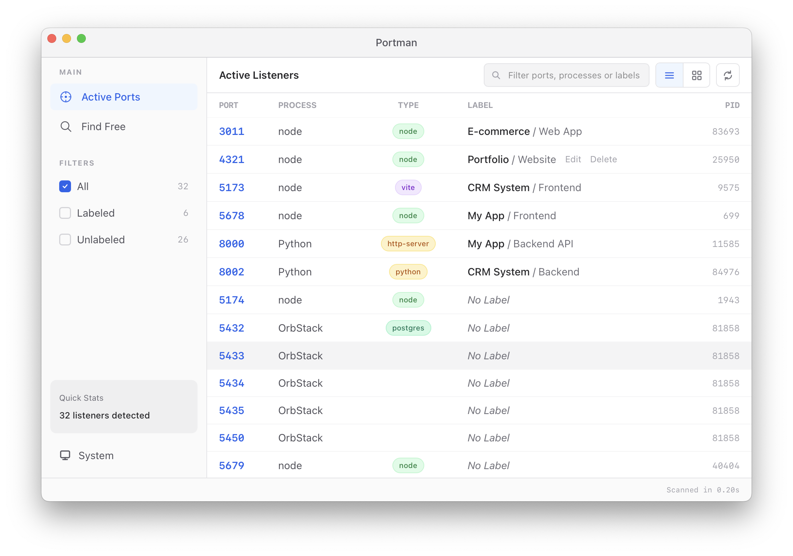

MCP Ready for AI Agents
Master Your Local Ports
The ultimate macOS port management tool. Visualize active listeners, label services, and expose your environment to AI agents via MCP.
download
Download for macOS
$
npx portman-mcp
